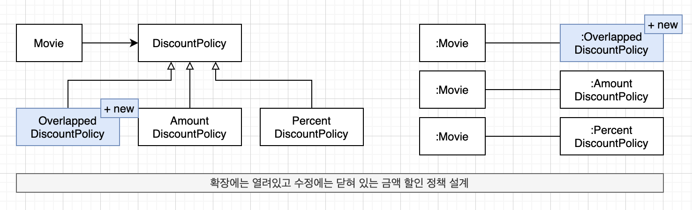
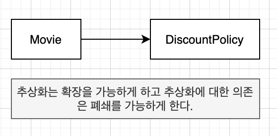
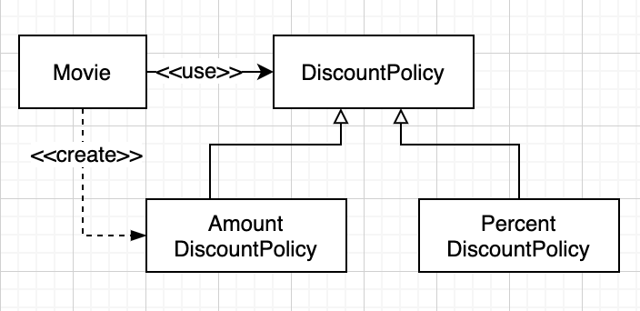
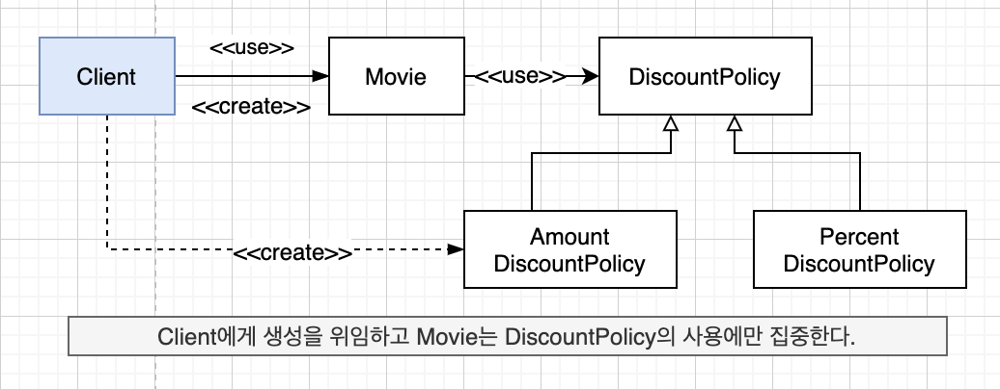
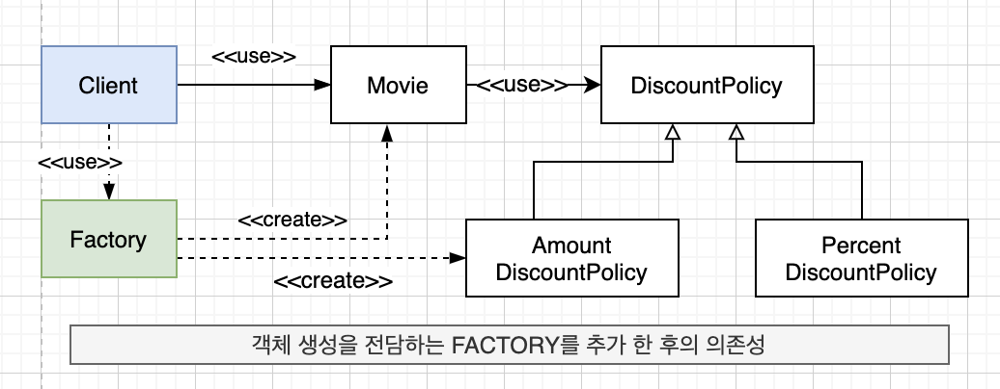
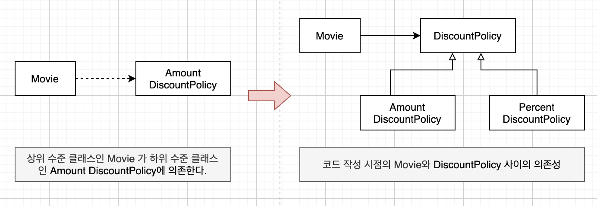
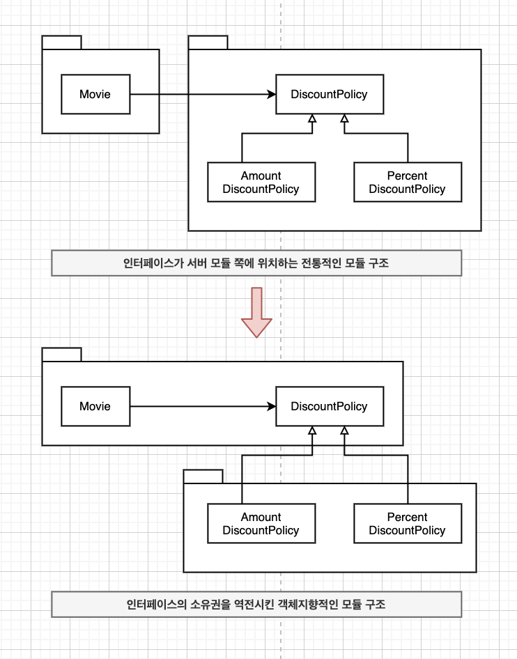

“OBJECTS 9장”
개팡-폐쇄 원칙(Open-Closed Principle, OCP)
소프트웨어 개체(클래스, 모듈, 함수 등등)은 확장에 대해 열려있어야 하고, 수정에 대해서는 닫혀 있어야 한다.
- 확장에 대해 열려 있다
- 애플리케이션의 요구사항이 변경될 때 이 변경에 맞게 새로운
동작을 추가해서 애플리케이션의 기능을 확장할 수 있음
- 애플리케이션의 요구사항이 변경될 때 이 변경에 맞게 새로운
- 수정에 대해 닫혀 있다
- 기존의
코드를 수정하지 않고도 애플리케이션의 동작을 추가하거나 변경할 수 있음
- 기존의
컴파일타임 의존성을 고정시키고 런타임 의존성을 변경하라
- 컴파일 타임 의존성
- 코드에서 드러나는 클래스들 사이의 관계
- 런타임 의존성
- 실행 시에 협력에 참여하는 객체들 사이의 관계

- 컴파일 타임 의존성 != 런타임 의존성
- 컴파일 타임 의존성은 유지하면서 런타임 의존성의 가능성을 확장하고 수정할 수 있는 구조
추상화가 핵심이다
- 추상화에 의존하는 것
- 추상화
- 핵심적인 부분만 남기고 불필요한 부분은 생략함으로써 복잡성을 극복하는 기법
- 고정하고 변하지 않는 부분을 생략하는 추상화 메커니즘이 개방-폐쇄 원칙의 기반이됨
- 폐쇄를 가능하게 하는 것은
의존성의 방향- 수정에 대한 영향을 최소화하기 위해서는 모든 요소가 추상화에 의존해야 함

추상화가 수정에 대해 닫혀 있을 수 있는 이유는 변경되지 않은 부분을 신중하게 결정하고 올바른 추상화를 주의 깊게 선택했기 때문이라는 사실을 기억하라.
생성 사용 분리
1 | class Movie { |
- 결합도 Up -> 개방-폐쇄 원칙을 따르는 구조 설계 어려워짐
- 알아야 하는 지식 많아지면 -> 결합도 Up
- 문제는 객체 생성이 아니라 부적절한 곳에서 객체를 생성한다는 것
- 동일한 클래스 안에서 객체 생성과 사용이라는 두가지 이질적인 목적을 가진 코드가 공존하는 문제

- 하나는 객체를 생성, 다른 하나는 객체를 사용하도록 두가지 책임을 서로 다른 객체로 분리
생성과 사용을 분리
소프트웨어 시스템은 (응용프로그램 객체를 제작하고 의존성을 서로 “연결”하는 ) 시작 단계와 (시작 단계 이후에 이어지는 )실행 단계를 분리해야 한다.
1 | public class Client { |

FACTORY 추가하기
- FACTORY : 생성과 사용을 분리하기 위해 객체 생성에 특화된 객체
- 객체 생성 책임을 할당할만한 도메인 객체가 존재하지 않을 때 선택할 수 있는 PURE FABRICATION
1 | public class Factory { |

순수한 가공물에게 책임 할당하기
- 표현적 분해(representational decomposition)
- 도메인에 존재하는 사물 또는 개념을 표현하는 객체들을 이용해 시스템을 분해하는 것
- 도메인과 소프트웨어 사이의 표현적 차이를 최소화
- 행위적 분해(behavioral decomposition)
- PURE FABRICATION(순수한 가공물)
- 책임을 할당하기 위해 창조되는 도메인과 무관한 인공적인 객체
- PURE FABRICATION(순수한 가공물)
- 인공적으로 창조한 객체 > 도메인 개념을 반영하는 객체 in 애플리케이션
애플리케이션 모델은 사용자에게 반응하고, 실행을 제어하며, 외부 리소스에 연결하는 컴퓨터 객체를 이용해 도메인 모델을 보충한다.
먼저 도메인 본질적인 개념을 표현하는 추상화를 이용해 애플리케이션을 구축하기 시작하라. 만약 도메인 개념이 만족스럽지 못하다면 주저하지 말고 인공적인 객체를 창조하라.
의존성 주입(Dependency Injection)
- 의존성 주입
- 객체가 아닌 외부의 독립적인 객체가 인스턴스를 생성한 후 이를 전달해서 의존성을 해결하는 방법
- 생성자 주입
- 객체를 생성하는 시점에 생성자를 통한 의존성 해결
- setter 주입
- 객체 생성 후 setter 메서드를 통한 의존성 해결
- 장점
- 의존성 대상을 런타임에 변경
- 단점
- 객체가 올바르게 생성되기 위해 어떤 의존성이 필수적인지를 명시적으로 표현할 수 없음
- 메서드 주입
- 메서드 실행 시 인자를 이용한 의존성 해결
- 메서드가 의존성을 필요로 하는 유일한 경우
- 인터페이스 주입
- 인터페이스를 통한 의존성 해결
숨겨진 의존성은 나쁘다
- SERVICE LOCATION 패턴
- 의존성을 해결할 객체들을 보관하는 일종의 저장소
- 의존성 주입 외 의존성을 해결할 수 있는 대표적인 방법
1 | class Movie { |
1 | // AmountDiscountPolicy |
- 단점
- 의존성을 감춤
- 의존성을 구현 내부로 감출 경우 의존성과 관련된 문제가 컴파일 타임이 아닌 런타임에 가서야 발견
- 문제점을 발견할 수 있는 시점을 코드 작성 시점이 아니라 실행 시점으로 미룸
- 각 단위 테스트는 서로 고립되어야 한다는 단위 테스트 기본 원칙 위반
- 모든 문제의 원인은 숨겨진 의존성이 캡슐화를 위반했기 때문
명시적인 의존성이 숨겨진 의존성보다 좋다는 것이다.
가급적 의존성을 객체의 퍼블릭 인터페이스에 노출 하라.
의존성을 구현 내부에 숨기면 숨길수록 코드를 이해하기도, 수정하기도 어려워 진다.
접근해야 할 객체가 있다면 필요한 객체를 인수로 넘겨줄 수 없는지부터 생각해보자.
의존성 역전 원칙
추상화와 의존성 역전
- 상위 수준의 클래스는 어떤 식으로든 하위 수준의 클래스에 의존해서는 안됨

- 추상화에 의존하라
- 의존성 역전 원칙(DIP)
- 상위 수준의 모듈은 하위 수준의 모듈에 의존해서는 안된다. 둘 모두 추상화에 의존해야 한다.
- 추상화는 구체적인 사항에 의존해서는 안된다 구체적인 사항은 추상화에 의존해야 한다.
의존성 역전 원칙과 패키지
- 컴파일 타임 의존성
- 코드의 컴파일이 성공하기 위해 존재해야 하는 코드를 정의하는 것

- SEPARATED INTERFACE 패턴
- 추상화를 별도의 독립적인 패키지가 아닌 클라이언트가 속한 패키지에 포함
- 재사용될 필요가 없는 클래스들을 별도의 독립적인 패키지에 모아야 함
- 유연하고 재사용 가능하며 컨텍스트에 독립적인 설계는 전통적인 패러다임이 고수하는 의존성의 방향을 역전 시킴
- 전통적인 패러다임
- 상위 수준 모듈 -> 하위 수준 모듈에 의존
- 인터페이스가 하위 수준 모듈에 속함
- 객체지향 패러다임
- 상위 수준 모듈, 하위 수준 모듈이 모두 추상화에 의존
- 인터페이스가 상위 수준 모듈에 속함
의존성을 역전시켜야 한다.
유연성에 대한 조언
유연한 설계는 유연성이 필요할 때만 옳다
유연하고 재사용 가능한 설계란 런타임 의존성과 컴파일 타임 의존성의 차이를 인식하고 동일한 컴파일 타임 의존성으로부터 다양한 런타임 의존성을 만들 수 있는 코드를 가지는 설계를 의미한다.
- 설계의 미덕 =
단순함,명확함 - 미래의 변경이 일어날지도 모른다는 막연한 불안감을 불필요하게 복잡한 설계를 낳음
아직 일어나지 않는 변경은 변경이 아니다.
- 유연함은 단순성과 명확성의 희생 위에서 자라남
- 불필요한 유연성은 불필요한 복잡성을 낳음
- 유연성은 코드를 읽는 사람들이 복잡함을 수용할 수 있을 때만 가치가 있음
- 프로그램(텍스트 공간에 흩뿌려진) 과 진행 과정 사이를 가능한 한 일치시켜야 함
협력과 책임이 중요하다
- 객체의 협력과 책임이 중요
- 설계를 유연하게 만들기 위헤서는
역할,책임,협력에 초점을 맞춰야함 - 객체를 생성하는 방법에 대한 결정은 모든 책임이 자리 잡은 후 마지막 시점에 내리는 것이 적절
- 객체가 무엇이 되고 싶은지를 알게 될 때까지 객체들은 어떻게 인스턴스화 할 것인지에 대해 전혀 신경 쓰지 않음
- 너무 일찍 결정하는 것은 비생산적임
역할, 책임, 협력에 먼저 집중하라.